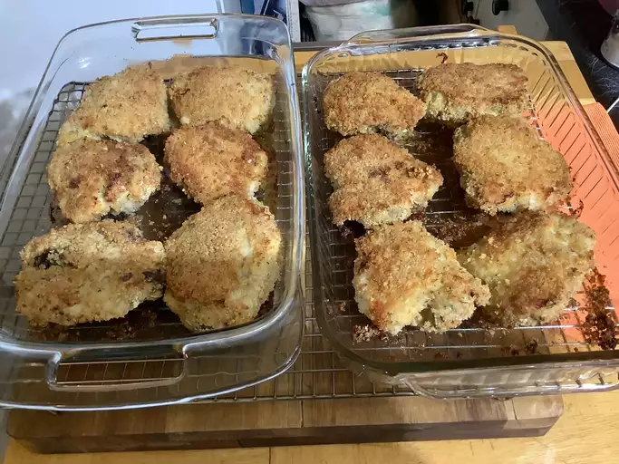

Oven Fried Chicken

Description
Making traditional fried chicken can be unhealthy; however, by cutting down
on oil and cooking in the oven it can make you feel better about eating this delicious recipe
Ingredients
- 12 Chicken thighs, breasts, legs, wings, or drumsticks
- Flour
- Bread Crumbs
- Eggs
- Seasonings
- Oil
Directions
- Dredge the chicken thighs by coating them in the flour (seasoned with salt and pepper)
- Coat in eggs and Bread Crumbs
- Pour a generous splash of oil into a baking dish and put the chicken inside
- Sprinkle with Paprikra and bake in a preheated oven for 30 minutes
- Flip the chicken and bake in a preheated oven for another 30 minutes
- Drain the cooked chicken on paper towels before serving